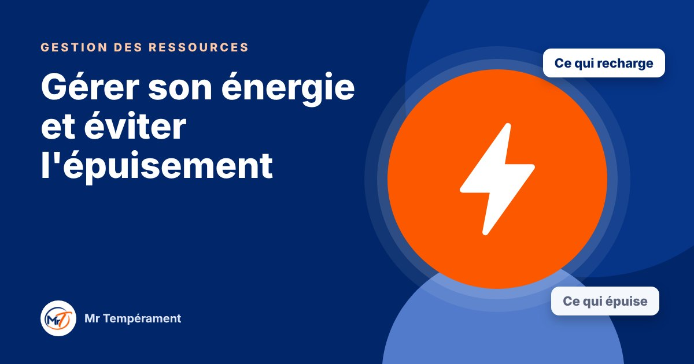

Gérer son énergie et éviter l'épuisement

Ce qui vous recharge, ce qui vous vide : votre tempérament donne des pistes pour mieux protéger votre énergie.
Votre énergie est une ressource, comme l'argent et le temps. Pourtant, on la gère souvent moins bien. Certains se rechargent avec les autres, d'autres dans le silence. Certains ignorent les signes de fatigue, d'autres les ruminent. Votre tempérament vous donne des pistes pour mieux la protéger.
Précision importante : cet article propose des repères de comportement. Il ne remplace pas un avis médical. Si une fatigue persistante vous inquiète, parlez-en à un professionnel de santé.
Le Dominant : ne pas ignorer les signaux
Il avance, quoi qu'il arrive. Son énergie semble inépuisable, jusqu'au jour où elle s'effondre. Il a besoin de planifier la récupération comme un rendez-vous, de fixer une heure de fin de journée et de respecter un jour de repos par semaine.
L'Influent : se recharger sans se disperser
Il puise son énergie dans le contact et les projets, mais s'éparpille vite. Il a besoin d'un sommeil régulier, de limiter le nombre de sollicitations par jour et de prévoir des temps de calme, même courts, pour ne pas s'user.
Le Stable : parler avant l'épuisement
Il porte beaucoup en silence. Sa fatigue est discrète, et souvent visible seulement une fois très avancée. Il a besoin de faire un bilan d'énergie chaque mois, de dire sa fatigue avant le seuil et d'oser demander de l'aide.
Le Consciencieux : apaiser le mental
Il s'épuise moins par l'action que par la réflexion : la pression qu'il se met, les pensées qui tournent. Noter ses pensées le soir, prévoir une activité sans objectif et diviser sa liste par deux les jours difficiles l'aide à relâcher.
Les signaux à repérer
Quel que soit votre tempérament, certains signaux méritent attention : irritabilité inhabituelle, difficultés de sommeil, perte d'envie, fatigue qui ne passe pas. Plus on les reconnaît tôt, plus il est facile de rééquilibrer.
Choisissez une seule habitude à installer ce mois-ci : un horaire de coucher régulier, une activité physique douce, une pause quotidienne. L'énergie se protège par de petites décisions, répétées.
Pour aller plus loin
Le Bilan DISC 3 domaines, avec le trio Gestion des Ressources, explore votre tempérament dans vos finances, votre gestion du temps et de votre énergie, avec une synthèse du trio.
Découvrir le trio Gestion des Ressources